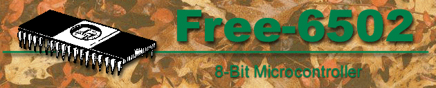

Back to the Free-IP Project Home Page
The Free-6502 core is a 6502 compatible CPU core. Basic features are:
| 6502 binary code compatible. | |
| Written in 100% VHDL. | |
| Simple synchronous 8-bit bus interface. | |
| Entirely synchronous design. | |
| Registered I/O for simple porting and integration. | |
| Supports all standard 6502 instructions. |
News and Reports From Users
Look at the new Implementations page. There is information there on different devices that the Free-6502 core has been ran through.
The Free-IP Project likes to hear about how you are using the Free-6502
core. Email to davidk@free-ip.com
and tell us what you're up to. If your stuff is not private, give us
permission to tell others about it!
Current Status
Version 0.7 of the Free-6502 core is available for download. Click on the download button at the top.
Some of the things that were changed in version 0.7 are:
| Fixed some problems with testsuite.vhd and sim/makeall.tcl. | |
| Shortened EOR ABS by one clock cycle. |
Use the mailing list for support issues. If that isn't practical for you, due to confidentiality issues, then send us email directly.
Known Issues
| Doesn't support BCD arithmetic mode. | |
| Test suite is not complete. |
Legal Stuff
Currently, there are no known patents or copyrights that cover this implementation of the 6502 CPU.
6502 links:
| Dan Boris's 6502 Processor Page | |
| 6502 Cross-Development Languages and Tools List | |
| www.6502.org | |
| -- Makers of a commercial ($$$) 6502 core. | |
| -- Also makers of 6502 cores ($$$). |